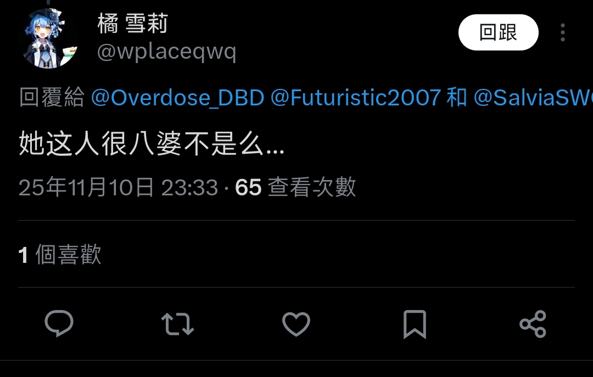

鼠尾草～🌿
@SalviaSWC
@Overdose_DBD 我没有实践我的理论是因为我没有时间，我还学习学校的课程免得自己期末挂科，不过如果我寒假没有安排的话，我很有可能会去实践的😁
至于你说的其他话和给我贴的其他标签，我看不懂，所以我也不评价

超级后后后藤
@Overdose_DBD
@SalviaSWC 你只是一味按照幻想般理想的方式指挥，从不考虑现实可不可行，纸上谈兵得幼稚。你从未亲身实践过自己的理论，也从未主导过风向，只是以自己狭隘的主观臆想偏见评价是非，因此并不需要负责。你为了小部分人利益牺牲大部分人利益，他人不可控不可测的受害是你的祭品，你只需要当鼠八婆意淫就够了！ https://t.co/FVO0ayMAWl